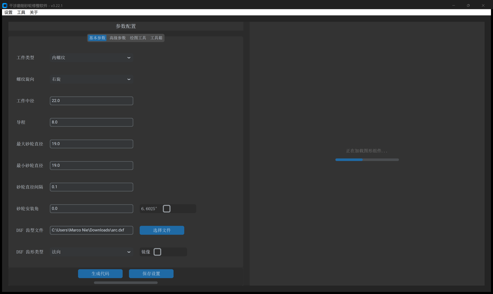
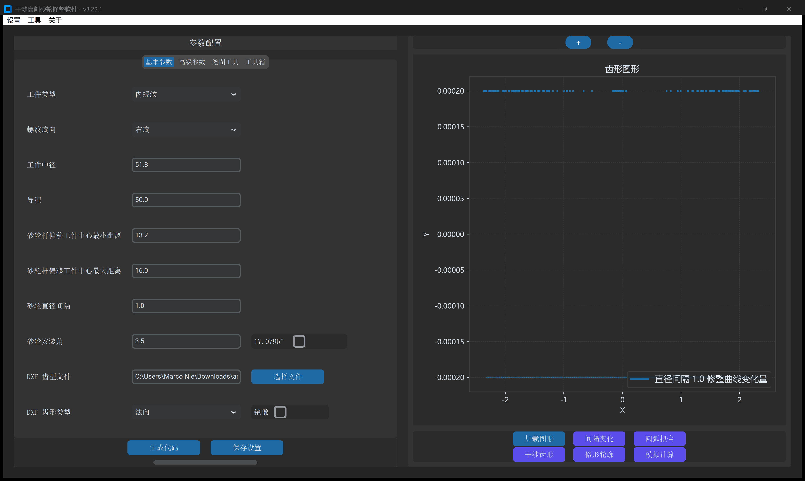
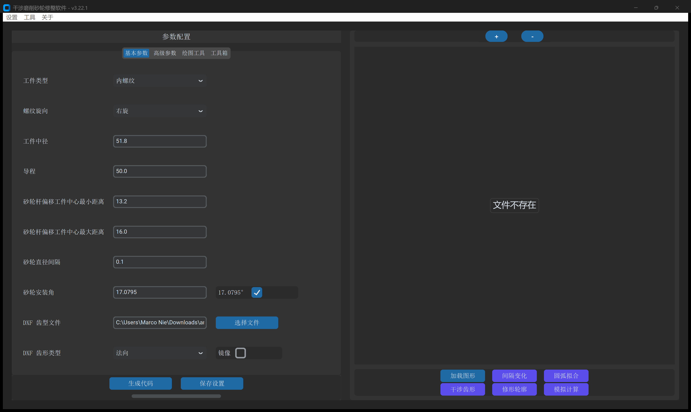
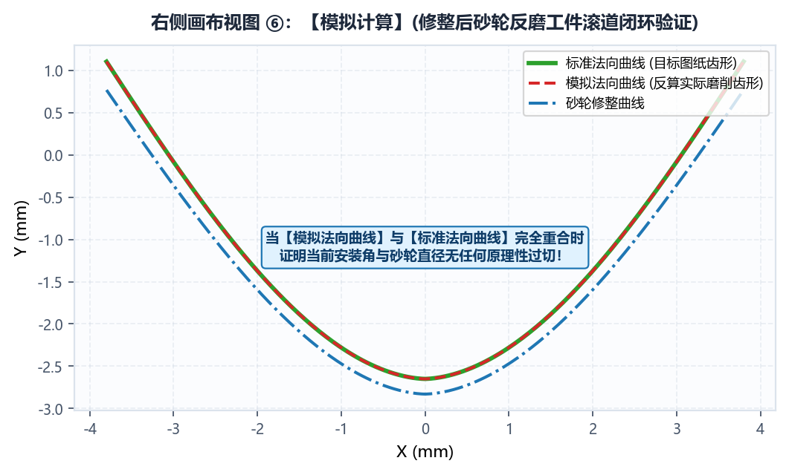

4.1 右侧交互画布与 6 大计算结果视图详解
每次在 基本参数 或 高级参数 中执行 生成代码 成功后，右下角的 6 个结果视图按钮将依次激活。强烈建议工艺人员按顺序点击检视图形质量，作为上机前的数字化虚拟试磨审核。
视图 1：加载图形（检查导入的目标齿形）
直接解析 基本参数 中指定的 DXF 齿型文件（如 arc.dxf），在画布上绘制目标截面轮廓：

- 显示要素与图例：
- 图例标注为 DXF 文件名（如
arc）。 - 横轴 （对称齿槽以 为中心），纵轴 （工件分度圆/中径基准线 ）。
- 图例标注为 DXF 文件名（如
- 检查要点：
- 曲线连续性：确认齿形光滑完整，无自交、反折、多余碎线或悬空断裂。
- 基准对齐：核验 处齿槽宽度与图纸中径公称尺寸一致。
- 装夹朝向：对于非对称齿槽，确认型线左右方向与机床实际装夹对齐（必要时在参数面板勾选
镜像）。 - 双圆弧角度标注：对于双圆弧齿型，系统支持在画布上叠加原点夹角标注，直观校验法向接触角与齿形对称性。
视图 2：间隔变化（砂轮全寿命周期修整廓形族）
载入多直径计算生成的误差变化量数据（dxf_compare_two_dia_errors.dxf），展示砂轮外径随磨损减小时修整截面法向变化规律：

- 显示要素与图例：
- 图例标注为
直径间隔 1.0 修整曲线变化量（根据设定的砂轮直径间隔自动格式化）。 - 纵轴反映相邻砂轮直径档位之间的法向形状修正增量。
- 图例标注为
- 检查要点：
- 平滑收敛性：变化量曲线全程平顺光滑，无突变奇异尖峰或剧烈震荡。
- 修正灵敏度：变化量数值直观反映了大导程螺旋空间包络在不同砂轮直径下的干涉敏感程度。
视图 3：圆弧拟合（G2/G3 相切圆弧逼近与分段结构）
载入数控插补拟合文件（dxf_dress_contour_curve_fit_arcs_*.dxf），将连续复杂的自由修整轮廓智能拆解为机床可直接执行的相切圆弧与直线段：

- 显示要素与图例：
- 各圆弧段以鲜明多色独立着色呈现，并在图例中逐一列出各段的精确拟合半径（如
R1 = 2.3796、R2 = 0.9864、R3 = 2.3799、R4 = 3.8054、R5 = 2.3058、R6 = 0.9889以及直线段 1、直线段 2、直线段 3）。
- 各圆弧段以鲜明多色独立着色呈现，并在图例中逐一列出各段的精确拟合半径（如
- 检查要点：
- 分段自适应性：曲率变化剧烈处（齿底过渡区）自动加密圆弧分段，平缓区自动合并为大半径圆弧或直线，兼顾加工精度与加工平顺度。
- 相切连续度：各圆弧段与直线段平滑相切，切点位置无台阶错位。
- 残差公差带深度查验：若需审核微米级法向逼近残差，可查阅计算输出目录中的交互式分析报告
plot_dress_contour_curve_fit_arcs_*.html与参数清单info_*.txt。
视图 4：干涉齿形（包络修正后的净砂轮成形截面）
叠加对比理论工件法向截面与三维螺旋包络计算求解出的净砂轮成形廓形：

- 显示要素与图例：
标准法向曲线（工件理论截面轮廓）。砂轮修整曲线 - 28.2000（消除大导程空间螺旋干涉后的成形砂轮截面廓形）。
- 检查要点：
- 包络相切形态：砂轮截面在有效工作齿深范围内与工件法向齿形保持包络切触。
- 齿顶延长与齿根倒圆：确认齿顶切线延长高度合理，齿根过渡倒圆平滑，确保磨削时既切满全齿深，又不划伤非加工表面。
视图 5：修形轮廓（叠加滚轮半径后的刀心修整轨迹）
显示金刚石滚轮刀心在数控机床中实际走刀的左右修整轨迹：

- 显示要素与图例：
修整轮廓曲线 - 28.2000（叠加金刚石修整滚轮半径 后的机床数控走刀刀心轨迹）。砂轮修整曲线 - 28.2000（带平移矢量的基准砂轮廓形）。
- 检查要点：
- 等距偏移精度：修整刀心轨迹与砂轮截面全程严格保持滚轮半径（如 ）的法向等距偏移。
- 齿槽交汇过渡：左右两侧走刀路径在齿底/齿顶处交汇顺畅，无逆向交叉或漏修台阶。
视图 6：模拟计算（数字化全真虚拟试磨复核）
数字化虚拟试磨的核心审核依据，同屏叠加三组关键曲线：

- 显示要素与图例：
标准法向曲线：原始工件理论设计轮廓。砂轮修整曲线 - 28.2000：计算出的成形砂轮实际修整轮廓。模拟法向曲线 - 28.2000：由修整后砂轮反向虚拟磨削出的工件法向截面。
- 检查要点：
- 曲线高度吻合：
模拟法向曲线必须与标准法向曲线完全重合，无目视可见分离。 - 干涉消除判据：两条曲线严丝合缝即证明大导程空间螺旋干涉已被完全消除，生成的 NC 代码可安全下发至机床加工。
- 曲线高度吻合：